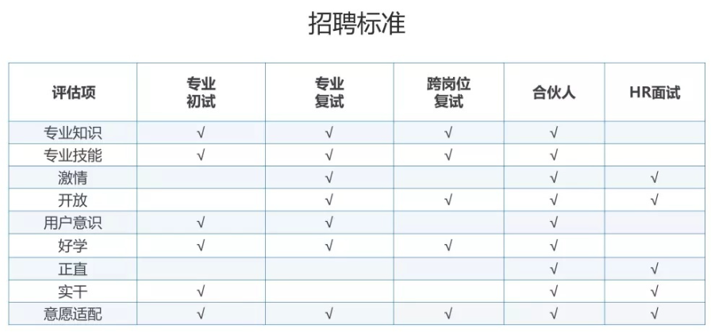

6.8. 模拟面试¶
TODO:https://t.qidianla.com/1165227.html
TODO: https://t.qidianla.com/author/qdxy-pmjy
面试流程：专业面→跨岗位面→BOSS面→HR面 1

Fig. 6.8.1 能力测试¶
6.8.1. 电话面¶
对方对你做一个初步的了解，根据你的沟通交流、表达来看下逻辑思维能力如何。
6.8.2. 专业面¶
针对你的简历提问
6.8.2.1. 心态崩溃的原因¶
校招社招两头为难：由于疫情没能实习，又想转行AI。
家里催的急引发的稀缺心态：由于家里经济条件不好会导致大脑的注意力被稀缺资源俘获。过度关注当前利益而无法考虑长远利益。为了赶截止日期，也不得不被那些最紧急的任务拖累（就容易抒发负面zs情绪），没有时间去做真正重要的事情。2
感觉未来就业无望：由于并非名校，且金融尤其看学历。
6.8.2.2. 为什么选择这一行¶
社会需要：对比大量的金融从业人员，真的AI产品经理是价值很大且稀缺的，AI产品由于代码、模型的分发边际成本低，可能影响上亿的人。
能力胜任：产品经理知识、金融行业知识（更好与开发交流开发背景）、编程AI知识（更好协调开发、做好项目管理）。
意向坚定：有很多客户经理，金融产品经理的岗位发来，我都是询问有没有金融AI产品岗，所以一直没有就业。
6.8.2.3. 职业规划¶
短期：把眼前的事情做得足够的扎实，修炼产品经理的技能。
中短期（3-5年）：职位从产品经理到高级产品经理（对金融智能顾投业务有通盘的了解）最好能到产品总监（整合各方面的资源，在商业上帮助公司）的位置。
中长期（7+年）：在中短期的人脉行业积累下，锻炼嗅觉，去做投资，帮助更多企业和青年人成长。